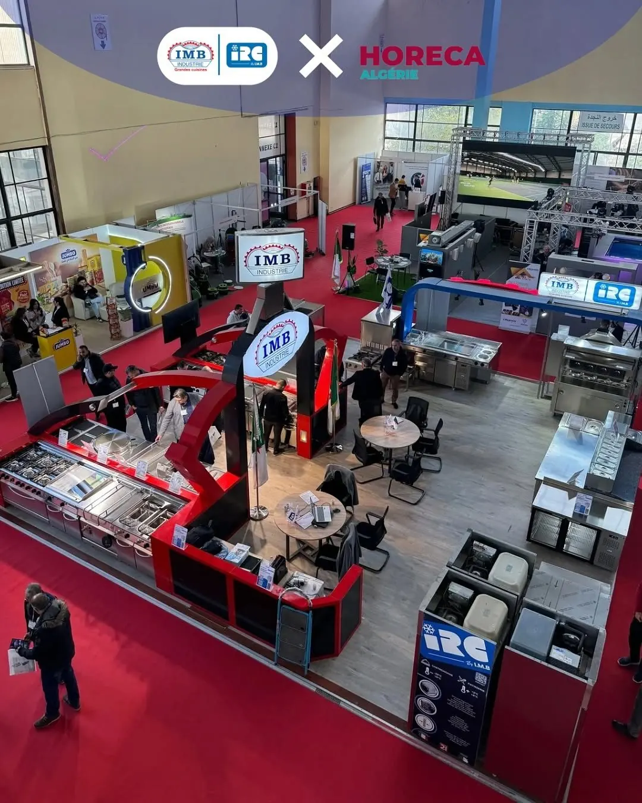
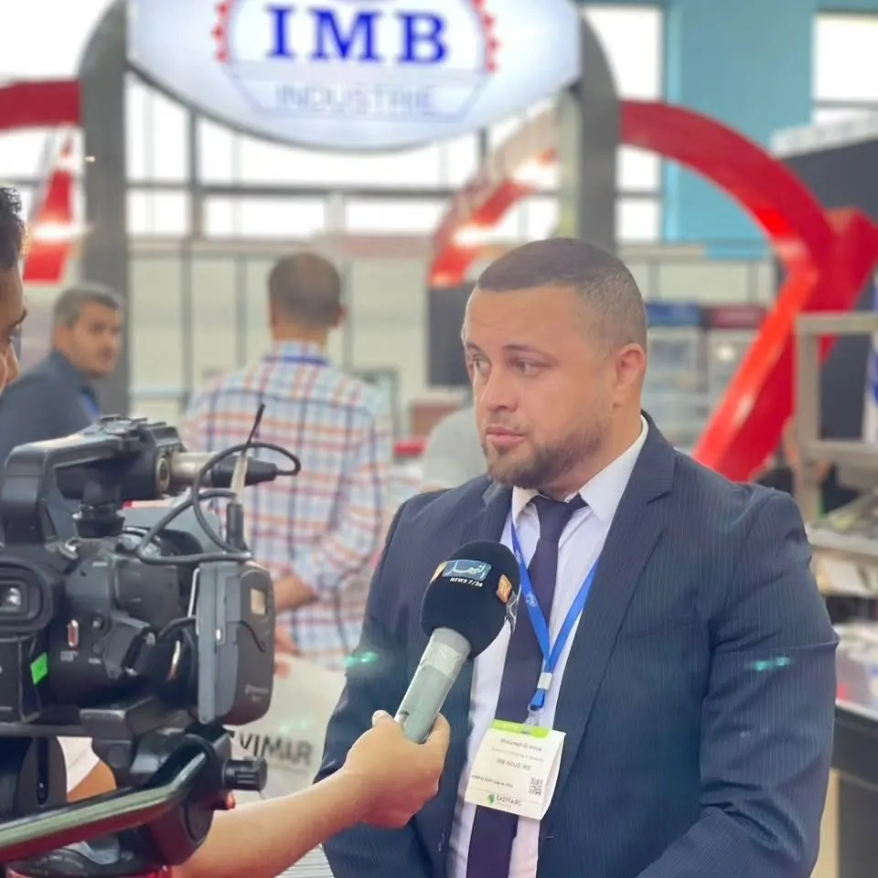

Cuisinières, fours, friteuses, marmites : la ligne de cuisson IMB, façonnée en inox dans nos ateliers depuis 1964.


Indiquez la longueur de votre mur, ajoutez les modules : la ligne se construit à l’échelle, avec les vraies dimensions des équipements.
IMB Industrie produit et commercialise son propre matériel. Découpe, pliage, soudure : l’inox prend forme dans nos ateliers avant de rejoindre les cuisines des hôtels, restaurants et collectivités.


Hôtels, compagnies, institutions : des cuisines exigeantes, équipées par IMB.


Et aussi : Sonatrach, Sheraton, Hotel Marriott, Radisson Blu, IBIS Hotels, Liberté Hôtel Oran, Air Algérie Catering, Cegelec, CSCEC, ENAGEO, ENAFOR, Palmary, ambassades des États-Unis, d’Italie et du Canada.
Horeca Expo 2025, Napec 2024, Djazagro 2024 : IMB et IRC à la rencontre des professionnels.




